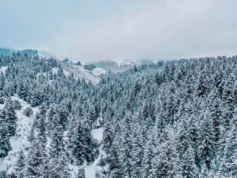

Preston, Idaho
Weather Summary
Currently:
Temperature: °F
Humidity: %
Wind Speed: MPH
Wind Chill:
Five Day Forecast
Storm to Dump Snow on East Idaho
“Officials with the National Weather Service forecast office in Pocatello say snow will start falling in East Idaho on Friday afternoon and will continue, especially in the mountains, into the weekend.”
They issued multiple winter weather advisories and winter storm warnings on Thursday due to expected snowfall and wind gusts — ranging from 35 to 45 miles per hour — that could make travel difficult in many areas.
There is a winter weather advisory for Idaho Falls, Rexburg, St. Anthony, Albion, Almo, Malta, Rockland, Holbrook, Inkom, McCammon, Downey, Lava Hot Springs, Malad, Preston, Thatcher, St. Charles, Montpelier, Georgetown, Grace, Soda Springs, Henry, Bone, Ashton, Tetonia, Driggs, Dubois, Spencer, Edie School and Small in effect from 2 p.m. on Friday until 5 p.m. on Saturday.
Weather officials say 2 to 5 inches of snow could fall in the lower elevations while 5 to 10 inches could fall in the mountain areas. “Plan on slippery, if not difficult, road conditions due to moderate snow,” according to the winter weather advisory. “Patchy blowing snow could significantly reduce visibility as well. The hazardous conditions could impact the evening commute.”
Contact Information

123 Weather Eye Lane, Preston, Idaho 83263
(555) 555-5555
info@fakeweathereye.com